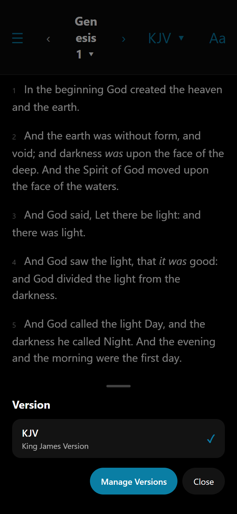
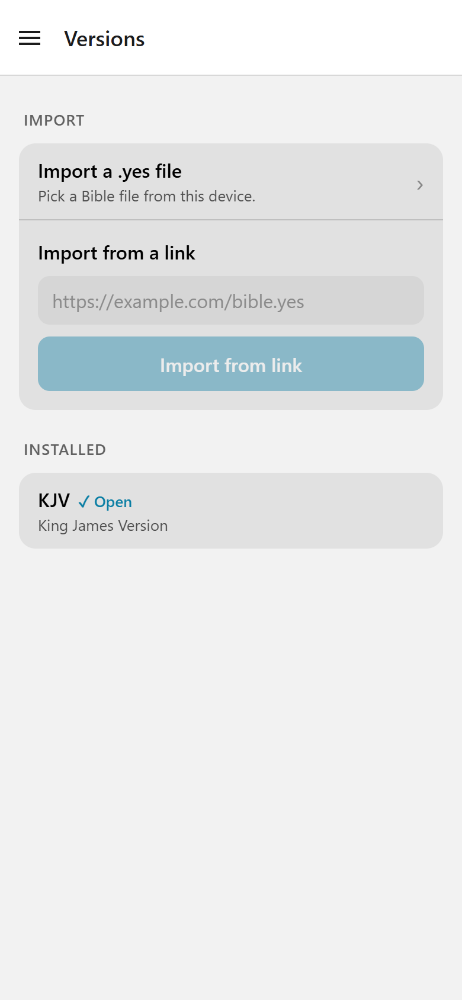
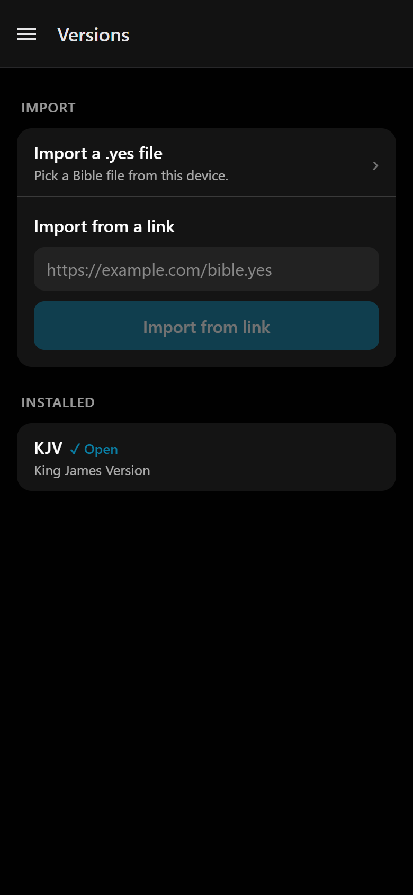
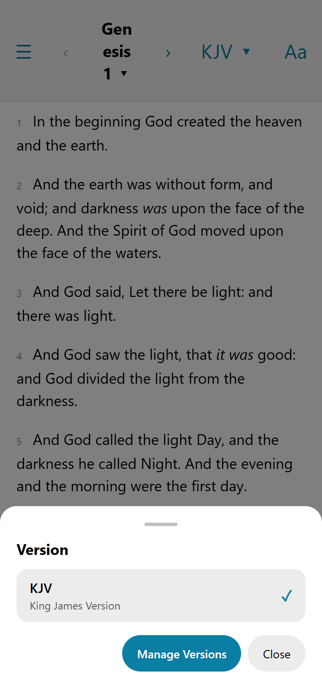
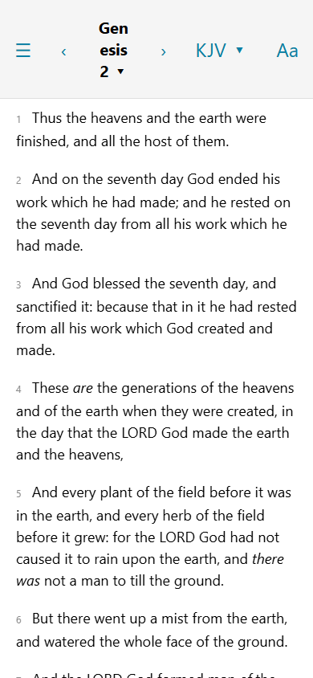
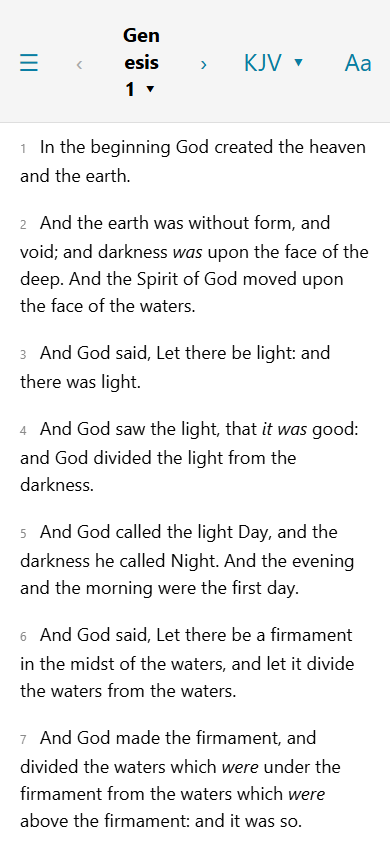
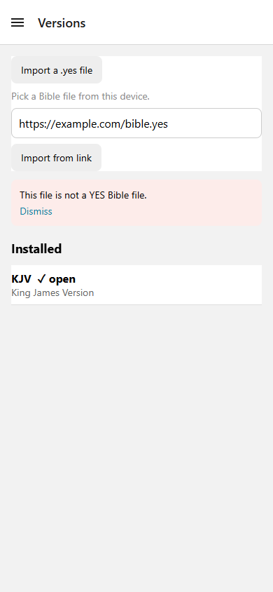
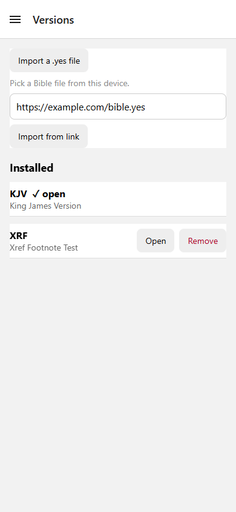
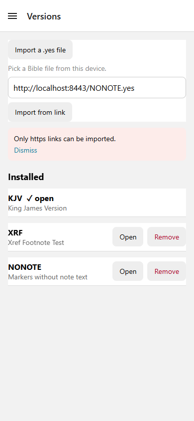

How the Bible reader was built
The decisions, research and progress behind AlkitabNext, a Bible reader for iOS, Android and the web. It is a migration of Upstream, the Android app yukuku/androidbible, to Expo.

The decisions, research and progress behind AlkitabNext, a Bible reader for iOS, Android and the web. It is a migration of Upstream, the Android app yukuku/androidbible, to Expo.

Start with these four: the progress log, the decision log, the parity matrix, and the roadmap as a page.
Architecture decision records, one per decision, numbered in the order they were made.
Notes on Upstream behaviour, file formats, and the platform questions the app had to answer.
Screens and recordings from the running app, grouped by issue where the file says so.









How the work is organised: the ideation that started the migration, and the conventions the agents follow.